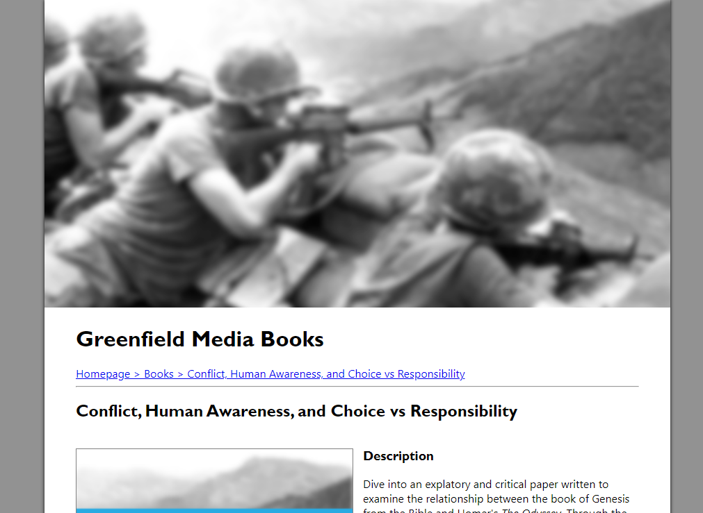
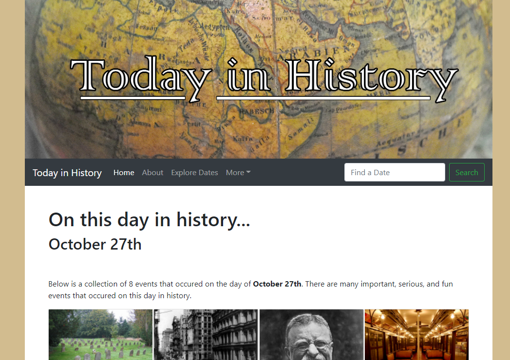
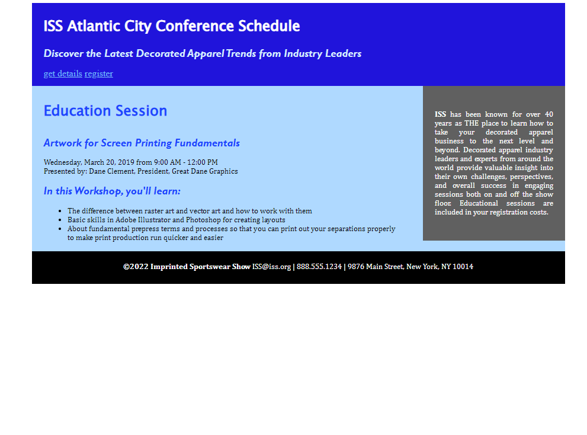
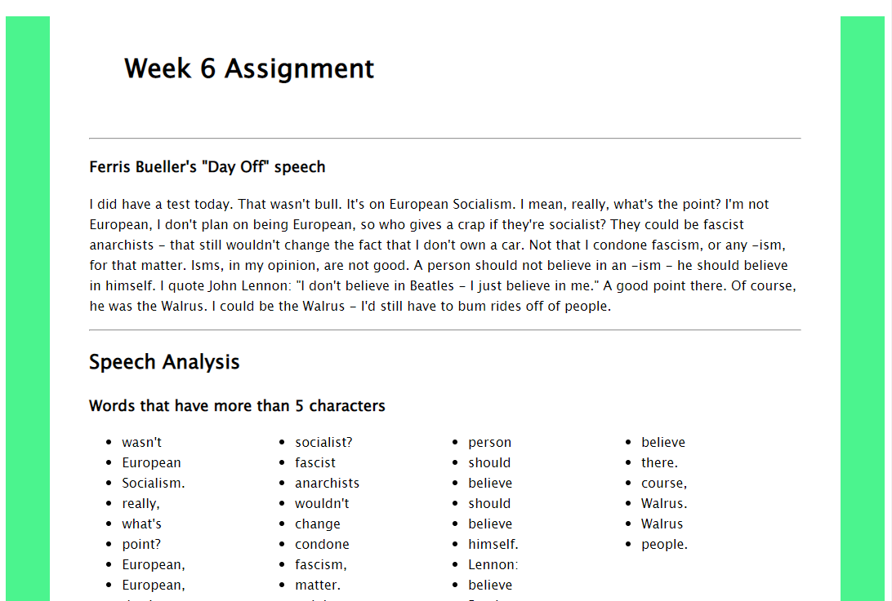
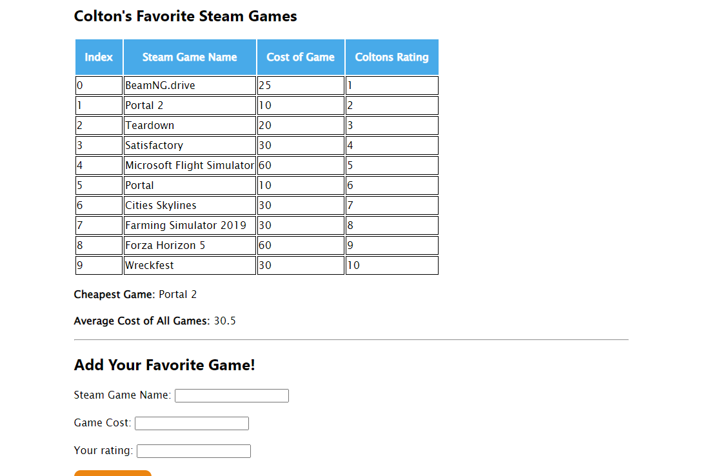
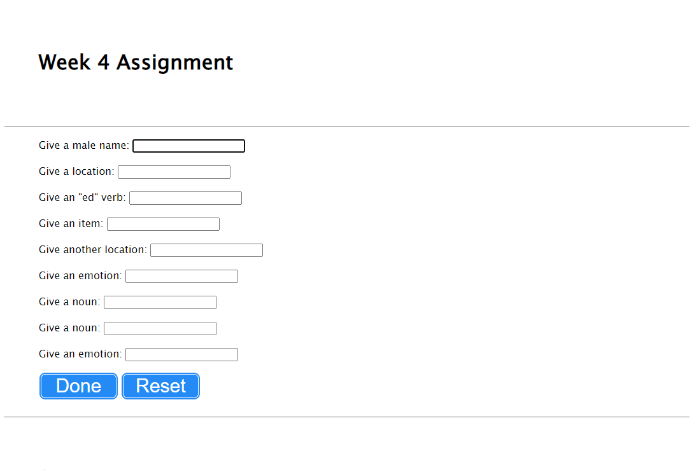

This section of my portfolio features 3 websites that were created over the course of the semester. There were more projects made, but these were the ones I felt would provide a good variety. The "first" website is just to see where I started and where I got to in terms of web development skill.
This website was created to explore how electronic publications, or ePub documents are made. A website was then created to have a download for the file. A PDF was also created and linked for download on the website.
This website was created to explore Bootstrap and responsive website design. Responsive website design means that the webpage adapts its layout depending on wat your screen size/width is.
This first website was done as an exploratory in-class activity. This website uses no forms of grid layout, and only uses px sized CSS layout. This website is very simple in nature and was done for an introductory assignment.
For this part of the web development portfolio, I decided to include a few of my example websites from my CSCI 121 course, which I am also taking this semester. To add in some variety, I included some more JavaScript based assignments, which focused on creating interactive JavaScript content. The content learned in CSCI 121 is both similar and varied from content covered in AENG 252.
All of these assignments focused less on the CSS/styling of the websites and more on the JavaScript/functional side. Once I got the website to be functional and no JavaScript errors, I went and added some basic CSS styling.
For the for loops assignment, a random speech was selected to be analyzed by the website. I chose Ferris Buelers speech to sort. The JavaScript then combs through the website and finds all of the paramaters, then displays them on the web page.
The JavaScript objects assignment was built around defining objects in JavaScript, and then organizing them based on a few certain characteristics. This assignment used various popular Steam games and analyzed their price, rating, and name.
The DOM manipulation project was a project built around user-entered parameters. These parameters then were added together to form a story. This JavaScript combined all the inputs into one, and then output the text at the bottom.
